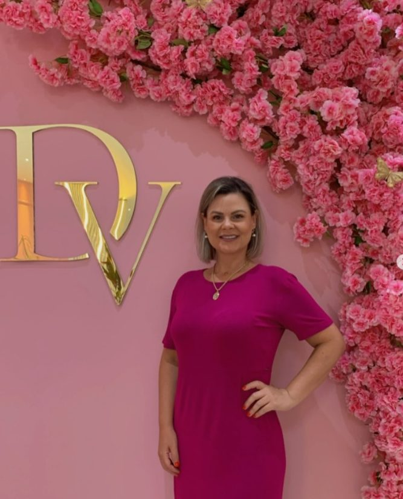
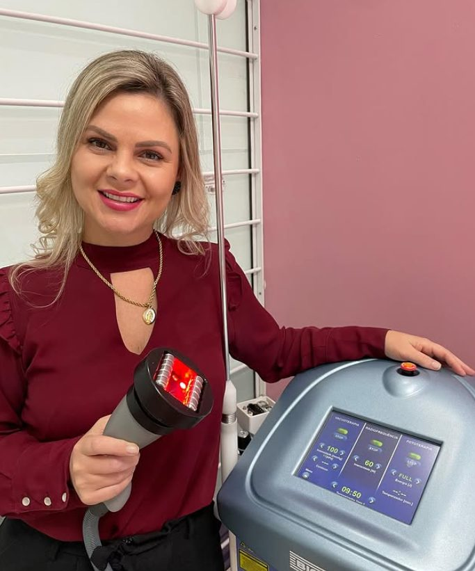

A maioria das mulheres percebe que o rosto mudou muito antes de conseguir nomear o quê. A avaliação existe pra dar nome — e dar caminho.
Avaliação presencial no Centro, sem compromisso de fechar

Realce sua essência. Revele sua confiança.
Indicação baseada em evidência, não em tendência de rede social.
Protocolos avançados e atualização constante em estética regenerativa.
O objetivo é você parecer descansada, não parecer procedimento.
Você entende cada etapa antes de aceitar qualquer uma delas.
Quatro sinais que aparecem antes das linhas de expressão — e que quase ninguém sabe nomear.
A linha da mandíbula perde definição e o rosto parece "cair" na foto de perfil.
A maçã do rosto esvazia. O olhar fica cansado mesmo depois de dormir bem.
A pele responde menos ao toque e a maquiagem começa a marcar onde não marcava.
Textura irregular, poro aparente e perda de viço, mesmo com skincare em dia.
Tratar um sinal isolado é o que produz resultado artificial. Por isso a avaliação vem antes.
A indicação sai da avaliação. Nada aqui é vendido como pacote fechado antes de olhar o seu rosto.
Reposição de volume e reequilíbrio de proporções, com leitura do rosto inteiro antes da primeira aplicação.
Suavização de linhas de expressão preservando a movimentação natural do rosto.
Recuperação de firmeza e sustentação a partir do estímulo do próprio colágeno.
Tecnologias de estética regenerativa para qualidade de pele e sustentação profunda.
Peeling de quarta geração, sem descamação, com efeito de pele lisa e uniforme.
Redução de gordura localizada por resfriamento controlado, com protocolo individual.
Protocolo para afastamento dos músculos abdominais, comum no pós-parto.
Limpeza, hidratação e protocolos de rotina que sustentam o resultado dos procedimentos.
Prescrição de cuidado diário, porque metade do resultado acontece fora da clínica.

Danielli Cássia Vanz atua há anos na estética avançada em Florianópolis. Antes de abrir a clínica própria no Centro, foi sócia-proprietária da +Top Estética, onde construiu a base técnica que hoje sustenta os protocolos da Danielli Vanz Estética Avançada.
Em 2026 foi convidada pela Evo e pela LMG Aesthetics para o Regen Match, encontro fechado de estética regenerativa — o tipo de reconhecimento que vem de pares, não de anúncio.
A clínica funciona sobre uma regra simples: o rosto é avaliado por inteiro antes de qualquer aplicação. Cada área tem uma função, e tratar uma sozinha é exatamente o que gera aquele resultado que todo mundo percebe.
[ Depoimento real da paciente — substituir pelo texto do Direct ou do Google. ]
Nome · procedimento · Florianópolis
[ Depoimento real da paciente — substituir pelo texto do Direct ou do Google. ]
Nome · procedimento · Florianópolis
[ Depoimento real da paciente — substituir pelo texto do Direct ou do Google. ]
Nome · procedimento · Florianópolis
Espaços reservados: 3 depoimentos reais (destaque "Feedback" do Instagram) + 1 par de antes/depois na dobra, se houver autorização de uso de imagem assinada.
Você sai da avaliação sabendo o que mudou, por que mudou e qual a ordem certa de tratar. Sem pacote empurrado, sem promessa que a pele não sustenta.